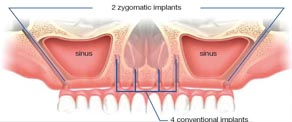

Patients with severe bone resorption in the maxilla are often victims of unsuccessful prosthetic rehabilitation, due to the inability to obtain sufficient anchorage for the prosthesis. Such patients often look for a sustainable solution involving minimal surgical procedures and reduced treatment time, without sacrificing their expectations of success.
In recent times, hospitals in India have chalked out the most common way of treating such patients using grafting proceduces, and are currently being used with widely varying degrees of success and no clear consensus among surgeons as to the expected results. The development of the Zygoma implant provides a unique substitute for rehabilitating the severely resorbed maxilla, with only one surgical procedure and without any need for grafting.
The procedure of installing the Zygoma implant consists of the following steps:
1. Beforehand :
Maiden examination, x-rays.
Radiographic examination of resorbed frontal alveolar bone of the upper jaw.
The objectives of radiographic examination of the zygomatic bone are:
- detecting pathology in the maxillary sinus.
- evaluating zygomatic bone volume.
- Determining the topography of the anterior wall of temporal fossa and/or the presence of concavities.
- Estimating the thickness of the alveolar process to the maxillary sinus in the premolar region for bone support of the Zygoma implant.
2. Surgery and implant installation:
The step ensures that the implant is guided along the correct path of insertion through the sinus.
3. Attaching the bridge:
A week or so after, the permanent implant bridge can be fixed to the implant.
Your new teeth should blend in perfectly with the others. People will find it impossible to tell the difference.